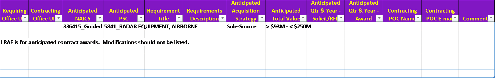

ANNEX 25 - LONG RANGE ACQUISITION FORECAST
The official NMCARS regulation resides at https://www.secnav.navy.mil/rda/DASN-P/Pages/NMCARS.aspx
Pursuant to 5205.404 Release of long-range acquisition forecasts., the template below shall be used in reporting the long range acquisition forecast. The electronic version of this template is available on the website identified at NMCARS 5201.105-3 Copies..
